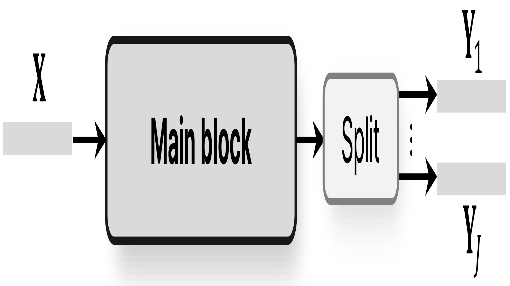

First image description.

First image description.

Second image description.

Third image description.

Since the recent success of a time-domain speech separation, further improvements have been made by reducing the length of the sequence as little as possible to increase the amount of computation. Minimizing data suppression should be effective because separation has to generate more output than input data. Previous studies have addressed the long sequence by avoiding direct processing of long sequences by dividing the sequence into chunk units, also known as dual-path model. In particular, it is common for the process of separating features as much as the number of speakers to be located at the very end of the network. Therefore, it is an inevitably inefficient separation method. Rather, it is desirable and natural to extend the feature sequence as much as the number of speakers as an additional dimensions in advance, and to consider them together. Accordingly, this paper presents an asymmetric strategy in which the encoder and decoder is partitioned to perform distinct processing in separation tasks. The encoder analyzes features and the output of the encoder is split into the number of speakers to be separated, and reconstructed commonly by the decoder. Using a common split layer, we also split intermittent encoder features as skip connection for reconstruction decoder based on the U-Net structure. In addition, we refrain from dividing chunks into dual-paths and design and utilize both global and local blocks to directly process long sequences. The experiment suggests that this separation-reconstruction structure is effective and that the proposed global and local blocks alone can sufficiently replace the dual-path structure, suggesting very effectiveness. Therefore, the final model proposed including both of these achieved state-of-the-art performance with much less computation than before in various benchmark datasets.
@article{
your-citation,
title={Your Paper Title},
author={First Author and Second Author and Third Author},
journal={Journal Name},
year={Year},
volume={Volume},
number={Number},
pages={Pages},
doi={DOI}
}